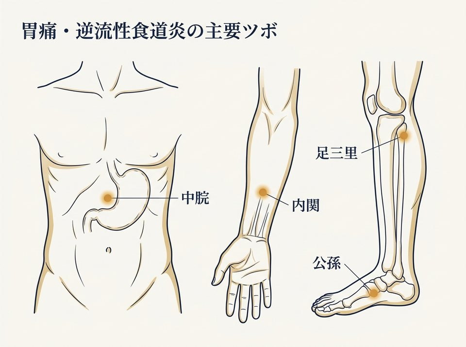

潰瘍性大腸炎の鍼灸
大腸粘膜に潰瘍やただれが生じ、血便や下痢の寛解と再燃を繰り返す厚生労働省の指定難病です。


院長YouTube解説・関連動画
初期段階では多くの場合、血便の症状がある
潰瘍性大腸炎の初期段階では、直腸とＳ状結腸の狭い部位に炎症の範囲がとどまっています。しかし、症状が進んでいくと大腸の左半分に炎症が広がって行きます。
さらに症状が進むと、大腸全体に炎症が広がります。大腸全体に症状が進んでしまうと、重症であると判断されます。
初期段階では多くの場合、血便の症状があります。下痢や食欲不振、腹痛などの症状も合わせて見られることもあります。下痢がひどい場合は、脱水症状を起こしたり体重が減ったり、発熱したりすることもあります。
激しい炎症が長い期間続いたり、腸管壁の深くまで炎症が進んだりすると、色々な合併症が腸に起こることがあります。
腸に起こる合併症は、大量の出血や狭窄、腸に穴が開く穿孔などです。場合によっては、腸の中にガスや毒素がたまって大腸が膨らみ、発熱や頻脈などの全身への中毒症状が現れる中毒性巨大結腸症が起きることもあります。
腸以外に合併症がおこることもあります。主に、腸以外に起こる合併症は、関節や皮膚や眼の病です。
潰瘍性大腸炎は、症状が落ち着いている状態の時と症状が悪化している状態の時を繰り返します。
その状態のまま、長い時間経ってしまうと大腸がんを発症するリスクが高まります。特に10年以上経った場合、全大腸炎型に発がんのリスクが高いと言われています。
腹部の痛みと下痢：潰瘍性大腸炎の最も一般的な症状の1つが、腹部の痛みとクランプ、そして下痢です。大腸が炎症を起こすと、正常な排便のプロセスが乱れ、下痢が引き起こされます。これは通常、水分を含んだ便または下痢便で、しばしば血や粘液が混じることがあります。
体重減少：多くの人が体重減少を経験します。これは、炎症と下痢が栄養の吸収を妨げるためで、さらに食欲不振も体重減少を引き起こす可能性があります。
疲労と無力感：炎症は身体全体に影響を及ぼし、特に疲労感や全身の無力感を引き起こす可能性があります。これは炎症によるエネルギーの消耗、栄養素の欠乏、または病状が引き起こすストレスや不安によるものである可能性があります。
不整脈：潰瘍性大腸炎は稀に不整脈を引き起こすことがあります。これは、炎症や脱水が心臓に負担をかけ、心拍数やリズムに影響を及ぼすためです。
眼球炎や皮膚炎：潰瘍性大腸炎は、腸外症状として眼球炎や皮膚炎などを引き起こすことがあります。これは体の免疫反応が他の身体部位に影響を及ぼす結果とされています。
骨盤の痛み：一部では、炎症が腸管を超えて周辺組織や器官に広がり、骨盤の痛みを引き起こすことがあります。また、排便の際の痛みや性交時の痛みも報告されています。
成長遅延：小児や青少年の場合、潰瘍性大腸炎は身体の成長と発達を遅らせる可能性があります。これは主に栄養素の吸収不足や慢性的な炎症が身体のエネルギーを消耗するためです。
骨の脆弱性：潰瘍性大腸炎は長期的には骨密度の低下や骨折のリスクを増加させる可能性があります。これは主に慢性炎症が骨組織の再生を阻害し、また栄養吸収の問題が骨の健康に必要な栄養素の供給を制限するためです。
熱や発汗：潰瘍性大腸炎の病期によっては、一部の人が発熱を経験します。これは体が炎症に反応し、免疫システムが病原体と戦うために熱を生成するためです。
潰瘍性大腸炎の改善において主な目標は、大腸の炎症を抑えて症状を抑え軽くすること、炎症のない状態を維持することです。そのためには、腸の炎症を抑える薬を使い改善を行います。
基本的には、炎症抑制薬を使います。炎症が強い場合は、ステロイドを使って改善を行います。他にも、免疫調節薬や抗体製剤などを使うこともあります。
それだけでは効果が見られない場合や重症の場合、重大な合併症が起こっている場合は手術が必要です。
基本的には、手術で大腸を全て摘出します。現在は、肛門を温存しておき自分の肛門で自然に排便することができるようにする手術が多く行われています。
潰瘍性大腸炎の改善の第一選択肢は通常、薬です。最も一般的に使用される薬は以下のとおりです。
アミノサリチル酸製剤：これは大腸の炎症を抑えるための主要な薬物であり、メサラジンなどがあります。
コルチコステロイド：これらは強力な抗炎症作用を持ち、潰瘍性大腸炎の急性期の改善に使用されます。
免疫抑制薬：これらは免疫システムの活動を抑えることで炎症を抑制します。アザチオプリンや6-メルカプトプリンなどがあります。
生物学的薬剤：これらは特定の免疫反応をブロックすることで炎症を抑制します。インフリキシマブやアダリムマブなどが含まれます。
薬が効果不足であったり、重篤な副作用がある場合、または大腸癌のリスクが高まる場合などには、手術が検討されます。最も一般的な手術は全大腸切除術であり、大腸全体が取り除かれます。近年では、生活の質を維持するためにイレオアナル鼓腸吻合が行われることもあります。この手術では小腸の一部を用いて新たな直腸を形成します。
・ダイエットと生活習慣の変更
食事の変更や生活習慣の調整が症状の改善に役立つことがあります。これには、食物繊維の摂取を調節する、乳製品の摂取を控える、小分けに食事を摂る、適度な運動を行うなどが含まれます。
・代替方法と補完方法
一部では、ヨガや瞑想などのリラクゼーションテクニック、アクプンクチャ、プロバイオティクスやオメガ-3脂肪酸などのサプリメントを用いて症状を管理します。これらの方法は伝統的な改善方法と一緒に使われることが多く、それ自体で潰瘍性大腸炎を改善するものではありません。
・心理社会的サポート
潰瘍性大腸炎は身体的な苦痛だけでなく、精神的なストレスも引き起こします。心理的な介入、カウンセリング、サポートグループなどは、自身の病状に対処し、生活の質を向上させるために重要です。
潰瘍性大腸炎を改善するためには、食事や薬、心理的な方法、手術などがあります。それらの改善方法と合わせて、鍼灸を行うことも改善に効果を発揮します。
鍼灸で潰瘍性大腸炎の改善に取り組む場合は、症状を和らげること、症状が進むことを遅らせること、早く回復するためのサポートを目的として行います。
潰瘍性大腸炎は日常生活の中で、支障が起こったり悩んだりすることも多いです。潰瘍性大腸炎の改善には、精神的にケアすることも非常に重要です。病院での改善と合わせて鍼灸での改善に取り組むこともお勧めします。
ツボの場所と押し方
中脘は、みぞおちと臍を結ぶ縦線上にあるツボで、臍から指4本分上に上がったところにあります。
押すときは、呼吸を止めずに優しく押しましょう。中脘はお腹にあるツボで、胃腸に対して作用するツボのため、満腹の時に押さないことも大事です。
大腸兪は、腰の骨のいちばん上を結んだ線の高さにあるツボで、背骨から左右に指２本分外に進んだところにあります。
押すときは、親指を使って押します。両手を腰に当てて押すと圧を加えやすくお勧めです。
天枢は、臍から指3本外に進んだ場所の左右両側にあるツボです。
押すときは、ゆっくりと押しましょう。押した後にのの字を書くようにすると、脂肪が落ちやすくなる効果も期待できます。
▼ 詳しく知りたい項目だけタップして開けます（全項目の医学解説を収録）
01. 原因とメカニズム
なぜ症状が起きるのか・鍼灸の作用機序を読む
▼
01. 原因とメカニズム
なぜ症状が起きるのか・鍼灸の作用機序を読む
大腸粘膜に潰瘍やただれが生じる指定難病で、寛解期と再燃期を繰り返します。単一の明確な原因は特定されていませんが、自己免疫の過剰反応、遺伝的要因、高脂質・肉類中心といった食習慣の欧米化、ストレスや環境要因、腸内フローラの乱れ、細菌・ウイルス感染、食物アレルギーなどが複合的に関与すると考えられています。
なぜ鍼灸で改善へ向かうのか？（作用機序の図解）
潰瘍性大腸炎に対する鍼灸は、脳腸相関と迷走神経反射による胃腸運動の調整機序を通じて、お体本来の回復力を引き出します。
胃腸機能と深く結びつく四肢・腹部の経穴を刺激し、体性感覚神経から中枢へ信号を送ります。
脳幹を経由した体性-内臓反射により、副交感神経（迷走神経）経由で胃腸の働きを調整します。
弱まったぜん動を促す一方、下痢型の過剰な収縮や内臓知覚過敏は穏やかに鎮静します。
ストレスで乱れにくい胃腸の土台を整え、胃もたれ・便通異常・吐き気の軽減を目指します。
02. よくあるお悩み
このような症状はありませんか？（4項目）
▼
02. よくあるお悩み
このような症状はありませんか？（4項目）
- ✓血便や粘血便、繰り返す下痢に悩んでいる
- ✓腹痛やけいれん痛、食欲不振・体重減少がある
- ✓発熱や全身の倦怠感が続き、再燃への不安が大きい
- ✓病院での治療と並行して寛解維持のケアを取り入れたい
03. 当院の施術アプローチ
施術の進め方・改善のポイントを見る
▼
03. 当院の施術アプローチ
施術の進め方・改善のポイントを見る
04. ツボ詳細・セルフケア一覧
潰瘍性大腸炎・クローン病（IBD）の腸管自律神経ツボ図解（6穴）
▼
04. ツボ詳細・セルフケア一覧
潰瘍性大腸炎・クローン病（IBD）の腸管自律神経ツボ図解（6穴）
実際の施術ではお一人おひとりの体質・症状に合わせて選穴しますが、炎症性腸疾患（潰瘍性大腸炎・クローン病）・過敏性腸症候群の併用ケアの臨床でよく用いられる代表的なツボの目安です。
| ツボ名 | 位置の目安 | 主な狙い | セルフケアの注意点 |
|---|---|---|---|
| 中脘（ちゅうかん） | みぞおちとおへその中間 | 胃腸の蠕動バランス・食後の張り軽減 | 腹痛が強い活動期は押さず温めるだけにします。 |
| 天枢（てんすう） | おへその左右それぞれ指3本分外側 | 大腸の運動調整・下痢や腹鳴の緩和 | 腹部に強い圧痛がある場合は遠隔穴を優先します。 |
| 関元（かんげん） | おへそから指4本分下 | 下腹部の冷え改善・迷走神経を介した腸管鎮静 | 穏やかな温灸が特に相性の良いツボです。 |
| 足三里（あしさんり） | 膝の下外側、指4本分下 | 迷走神経抗炎症反射の活性化・栄養吸収サポート | 日常のセルフケアに最も安全な遠隔穴です。 |
| 上巨虚（じょうこきょ） | 足三里からさらに指4本分下 | 大腸の「下合穴」として腸管機能と排便リズム調整 | すねの外側を優しく押してほぐします。 |
| 三陰交（さんいんこう） | 内くるぶしの上から指4本分上 | 自律神経・睡眠・ストレス性の腸過敏緩和 | 下痢が続く時期の冷え対策にも役立ちます。 |
05. 医学的根拠・国際査読論文（PubMed / Cochrane）
科学的エビデンス・出典リンク一覧（2件）
▼
05. 医学的根拠・国際査読論文（PubMed / Cochrane）
科学的エビデンス・出典リンク一覧（2件）
国際的な医学データベース（PubMed・Cochrane等）で報告されている過敏性腸症候群（IBS）・便秘・下痢領域の代表的な査読済み鍼灸研究をまとめています（標準治療との併用や研究上の限界を含めて正確に掲載）。
| 年・研究デザイン | 対象・規模 | 主な結果 | 限界・出典 |
|---|---|---|---|
| 2025年 多施設RCT | 下痢型過敏性腸症候群（IBS-D）280名（6病院） | 腹痛および便性状の複合レスポンダー率がシャム鍼比で有意に改善。 | 下痢型中心のデータで他病型への拡張は検証継続中。 Gastroenterology (PMID: 40441496) |
| 2016年 大規模多施設RCT | 慢性重症機能性便秘 1,075名（15病院） | 電鍼8週で週あたり完全自発排便回数がシャム鍼比で有意増加し12週持続。 | 器質的腸閉塞や炎症性腸疾患の除外が前提。 Ann Intern Med (PMID: 27618593) |
参考文献・出典
- 2025年 多施設RCT（下痢型過敏性腸症候群（IBS-D）280名（6病院））— Gastroenterology (PMID: 40441496)
- 2016年 大規模多施設RCT（慢性重症機能性便秘 1,075名（15病院））— Ann Intern Med (PMID: 27618593)
06. よくある質問（FAQ）
よくあるご質問を見る（2件）
▼
06. よくある質問（FAQ）
よくあるご質問を見る（2件）
Q. 潰瘍性大腸炎は病院の治療と鍼灸を併用できますか？
はい。病院での薬物療法による炎症コントロールを基本としつつ、鍼灸を併用することで症状緩和や早期回復サポート、ストレスケアに役立てることができます。
Q. 症状が落ち着いている寛解期も通院やケアは必要ですか？
寛解期でも自己判断で薬を中断すると再燃しやすくなります。専門医での定期診察・内視鏡検査を続けながら、体調維持のケアを取り入れることが大切です。
あわせて読まれる関連疾患（消化器のお悩み）
椎体・肛門・気管食道・橈骨・腎の複数徴候を合併する先天性疾患。専門医管理下で筋緊張や疲労を補完します。
キノホルムによる薬害で生じた神経障害（新規発症なし）。専門医管理下で慢性期のしびれや筋緊張を補完ケアします。
飲酒が主因でない脂肪肝に炎症・線維化が加わった状態。食事と運動での減量を軸に、倦怠感や生活リズムの乱れを鍼灸で支えます。
長期の過剰飲酒で脂肪肝から肝炎・肝硬変へ進む肝障害。専門医管理と禁酒を基本に疲労や自律神経を整えます。
胃の一部が横隔膜の食道裂孔から上方へ飛び出す状態。医療機関での管理と並行し背部緊張や自律神経を整えます。
ガストリノーマによる胃酸過剰で難治性潰瘍を起こす疾患。専門医の治療を第一に、体調・自律神経を補完します。
CLINICAL RECOVERY CASES
✨ 実際の臨床改善事例・回復経過を見る
銀座本院をはじめ各院での実際の改善事例を症状別に絞り込んでご確認いただけます。
おひとりで悩まず、まずはご相談ください
銀座本院・川口・大宮・横浜・博多・田無の各院でご予約を承っております。